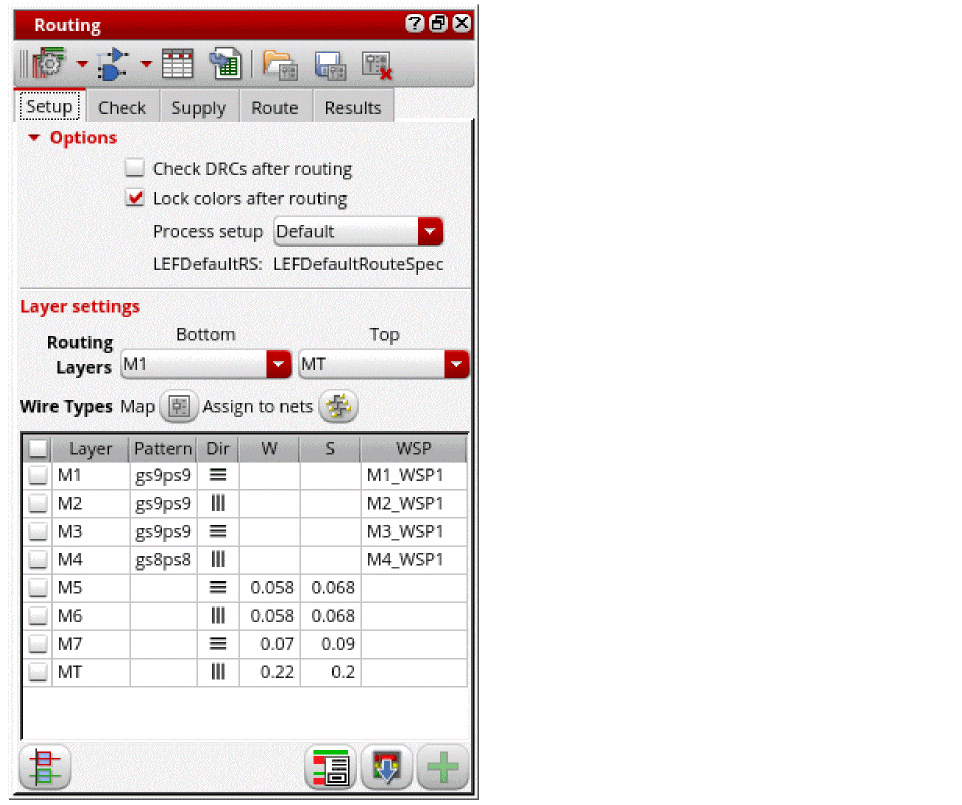
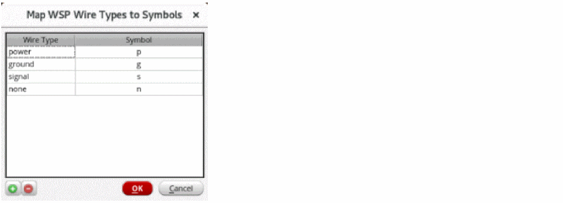

Configuring Standard Cell Router Settings
After the standard cell placement, use the Routing Assistant to configure the various routing options for standard cell routing before you run the router. To configure router settings:
- Open a design in Layout MXL.
-
Choose Window – Assistants – Routing.
Alternatively, right-click anywhere on the layout window menu bar and choose Assistants – Routing.
The Setup tab of the Routing assistant is displayed.
 - Select Check DRCs after routing to automatically run design rule checks after routing.
- Select Lock colors after routing to automatically color-lock the shapes after routing.
-
Select the appropriate process node from the Process setup drop-down list. Default is selected if a process node does not exist.
If the RMSOA PDK has multiple techLEFs, an additional Multi-tech LEF option is displayed. The different foundry rules are available as options in the drop-down list. - Choose the bottom and top preferred routing layers from the Bottom and Top drop-down lists. Specifying valid routing layers updates the WSPs visible in the table and specifies which layers the router should use for routing.
- Select the layers for which you want to configure the router settings. You can either select all layers or one or more of them.
-
Click Wire Types Map
to open the Map WSP Wire Types to Symbols form, which shows the wire type-to-symbol mapping information. You can add custom wire types and map them to unique symbols.
 -
Click Assign to Nets
to open the Assign Wire Types to Nets form, which shows a table for wireTypes to nets assignment.
- Once the router settings are configured, you can generate width spacing patterns (WSPs).
Related Topics
Routing Assistant User Interface for Standard Cell
Generating Width Spacing Patterns for Standard Cell Routing
Checking Layout Routability after Running Standard Cell Placer
Map WSP Wire Types to Symbols Form
Assign Wire Types to Nets Form
Return to top